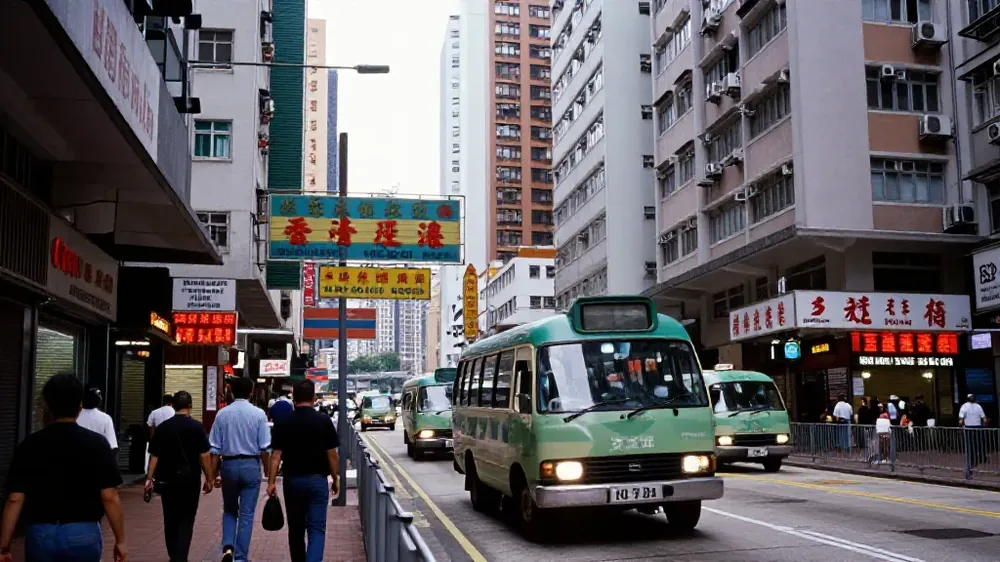
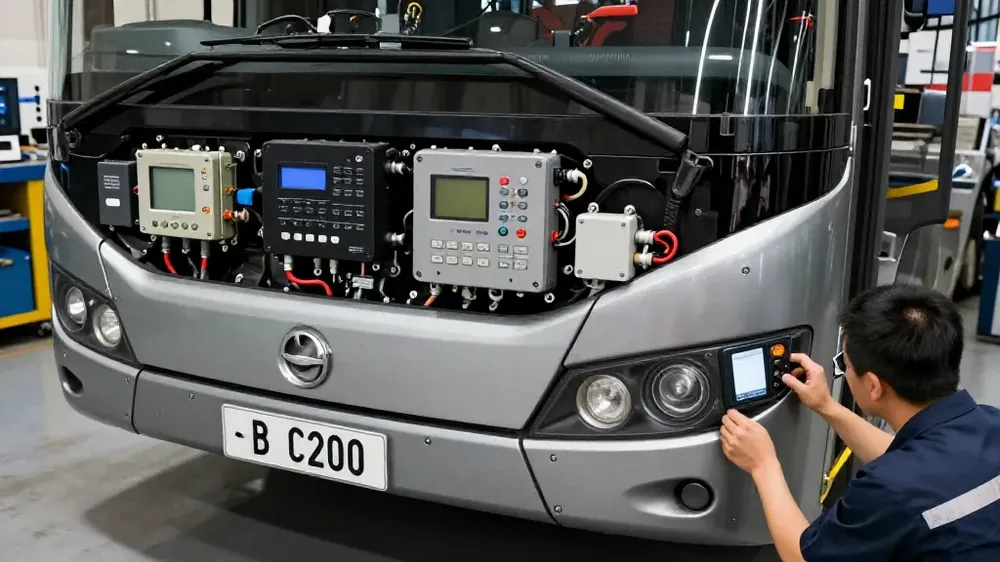
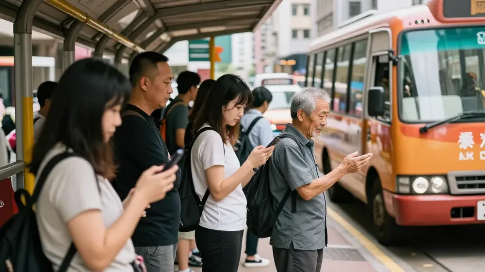
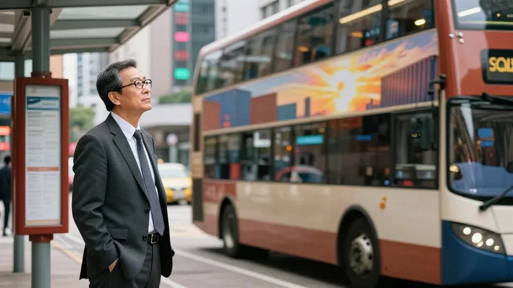

呢日我经过太子道，撞到一架城巴6333停喺巴士站，黄蓝色嘅车身喺多云嘅天底下特别醒目。巴士站有盖，几个人喺砖地行人路上等车，路面写住大大只白色「BUS」字，背景系一排住宅高楼同棕榈树。
我企喺度睇咗一阵，心里突然谂起好多嘢。

圖片由 AI輔助創作（Z-Image-Turbo）
一、太子道，唔系一条普通嘅路
太子道喺九龙，贯穿旺角、太子同九龙塘。呢条路我行咗二十几年，由1998年我开始做贸易嗰阵，每年都要嚟香港十几次，每次都喺太子道附近嘅酒店落脚。
嗰时嘅太子道仲未起地铁站，巴士就系最主要嘅交通工具。一架城巴由尖沙咀开到太子，再开去九龙塘，每一程都系香港人嘅日常。
而家睇返呢张相，最大嘅感受系——城巴仲喺度，但太子道已经唔同咗。路变阔咗，楼变高咗，但巴士站嘅砖地、有盖嘅候车亭、乘客等车嘅姿势，同二十年前几乎一模一样。
二、6333呢个编号，唔系普通嘅数字
城巴6333，呢个编号系架车嘅身份证。喺我哋做贸易嘅年代，每架巴士都有自己嘅编号，每架车嘅路线、车龄、维修记录，全部靠呢个编号追踪。同我哋做电子产品出口一样，每件货都要有SKU、有批号、有溯源。
一架巴士嘅一生，可能服务香港市民15到20年，每日来回行几百公里，载几万人。车号就系佢嘅履历表。睇到6333，我哋见到嘅唔系一架车，而系一个几十年嘅承诺。

圖片由 AI輔助創作（Z-Image-Turbo）
三、由城巴讲到制造业——我哋呢代人嘅集体记忆
城巴用嘅引擎、车壳、电子设备，好多嚟自欧洲品牌。香港巴士本身就系全球供应链嘅缩影：德国引擎、英国车架、日本电子、香港装配。
香港唔造巴士，但公共交通做到世界级，靠嘅就系呢种全球采购、本地服务嘅能力。呢种能力，就系我哋呢代人做贸易嘅核心技能。
1998年我做电子消费品出口，就系将中国制造经香港呢个超级联系人卖到全世界。香港嘅核心竞争力，从来唔系制造本身，而系连接嘅能力。城巴6333每日喺太子道来回，就系呢种连接能力嘅最具体写照。

圖片由 AI輔助創作（Z-Image-Turbo）
四、要睇城市嘅真实，唔好去景点，去巴士站
我成日话俾后生仔听：要睇城市真面目，唔好去尖沙咀、太平山、海洋公园，去巴士站。巴士站睇到人流、经济、文化同温度。太子道呢个巴士站，我企咗二十几年，每次都学到嘢。
五、2026年嘅太子道，仲有咩唔变？
睇返呢张相，最大感慨系好多嘢变咗，但城巴仲喺度。巴士、巴士站、等车嘅人、路面BUS字都仲喺度。但唔变嘅唔系物件，系连接嘅本质。
城巴嘅工作系将乘客由A点送去B点，贸易嘅工作系将货物由工厂送去客户手上，AI嘅工作系将答案由云端送去用户眼前。本质都一样：缩短距离、降低门槛、创造可能。

圖片由 AI輔助創作（Z-Image-Turbo）
六、畀70后实业家嘅三句话
第一句：认真做好一件简单嘅事，就系最大嘅不简单。城巴每日走同一条路，载同一种人，但佢系香港命脉。第二句：编号就系承诺。编号畀人睇，承诺畀自己守。第三句：连接就系价值。无论做巴士、贸易定AI，你嘅价值就系你连接咗边个同边个。
一架巴士嘅编号，可以系一个时代嘅印记。一个70后嘅记忆，可以跨越几个十年。一件简单嘅事，认真做，就系传奇。6333，多谢你今日畀我嘅呢一课。
The other day I was walking along Prince Edward Road when I ran into a Citybus, number 6333, parked at a bus stop. Its yellow-and-blue body stood out sharply under the cloudy sky. The stop had a shelter, a few people were waiting on the brick pavement, the road had a big white "BUS" painted on it, and behind everything were rows of residential towers and palm trees.
I stood there watching for a while, and a lot of things suddenly came to mind.
Image created with AI assistance (Z-Image-Turbo)
1. Prince Edward Road is not just any road
Prince Edward Road runs through Kowloon, cutting across Mong Kok, Prince Edward and Kowloon Tong. I have walked this road for more than twenty years. From 1998, when I started in trade, I came to Hong Kong a dozen or more times a year, and every time I stayed in a hotel near Prince Edward Road.
Back then there was no MTR station on Prince Edward Road yet, so buses were the main way to get around. A Citybus would run from Tsim Sha Tsui to Prince Edward, then on to Kowloon Tong, and every trip was just daily life for Hongkongers.
Looking at this photo now, what strikes me most is this — the Citybus is still here, but Prince Edward Road is not the same. The road is wider, the buildings are taller, but the brick pavement at the stop, the covered waiting shelter, the way passengers stand waiting for the bus, are almost exactly as they were twenty years ago.
2. 6333 is not just a number
Citybus 6333 — that number is the vehicle's identity card. In the days when I was doing trade, every bus had its own number, and each vehicle's route, age and maintenance record were all tracked through that number. It is the same as when we export electronics: every shipment needs an SKU, a batch number and traceability.
A bus's working life may be 15 to 20 years of service to the people of Hong Kong, running several hundred kilometres back and forth every day, carrying tens of thousands of passengers. The fleet number is its résumé. When we see 6333, what we are looking at is not one vehicle but a promise kept over decades.
Image created with AI assistance (Z-Image-Turbo)
3. From Citybus to manufacturing — the collective memory of my generation
The engines, body shells and electronic equipment on a Citybus mostly come from European brands. A Hong Kong bus is itself a miniature of the global supply chain: German engine, British body, Japanese electronics, assembled in Hong Kong.
Hong Kong does not build buses, yet its public transport is world class, and what makes that possible is exactly this ability to buy globally and service locally. That ability is the core skill of my generation in trade.
In 1998 I was exporting consumer electronics — selling made-in-China goods to the whole world through Hong Kong, the super-connector. Hong Kong's core competitiveness was never manufacturing itself, but the ability to connect. Citybus 6333 running back and forth along Prince Edward Road every day is the most concrete picture of that ability to connect.
Image created with AI assistance (Z-Image-Turbo)
4. If you want to see the real city, skip the sights and go to a bus stop
I tell young people all the time: if you want to see a city's true face, do not go to Tsim Sha Tsui, Victoria Peak or Ocean Park — go to a bus stop. At a bus stop you see the flow of people, the economy, the culture and the warmth. I have stood at this Prince Edward Road stop for more than twenty years, and I learned something every single time.
5. What has not changed on Prince Edward Road in 2026?
Looking at this photo again, what moves me most is how much has changed, and yet the Citybus is still here. The bus, the stop, the people waiting, the "BUS" painted on the road — all still here. But what has not changed is not the objects, it is the nature of connection.
A Citybus's job is to move passengers from point A to point B; trade's job is to move goods from the factory to the customer's hands; AI's job is to move answers from the cloud to the user's eyes. The essence is the same: shorten distance, lower the barrier, create possibility.
Image created with AI assistance (Z-Image-Turbo)
6. Three sentences for industrialists born in the 70s
First: doing one simple thing seriously is the greatest thing that is not simple. A Citybus runs the same road every day and carries the same kind of people, yet it is Hong Kong's lifeline. Second: a number is a promise. The number is shown to others; the promise is kept for yourself. Third: connection is value. Whether you run buses, trade or AI, your value is whichever two parties you connect.
A bus's fleet number can be the imprint of an era. The memory of someone born in the 70s can span several decades. A simple thing, done seriously, becomes a legend. 6333, thank you for today's lesson.